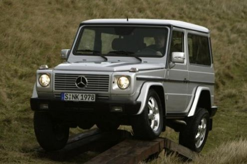

Mercedes-Benz G klasa
1.Pierwsza generacja
1.1 Konstrukcja
1.2 Silniki
- W460
- W461
1. Pierwsza Generacja

Samochód nosił kody fabryczne W460, W461 oraz W462. Prace nad powstaniem klasy G rozpoczęto w 1972 roku.
Celem Mercedesa było zbudowanie lekkiego, mocnego i terenowego auta przeznaczonego dla armii z maksymalnym poziomem bezpieczeństwa
i komfortu. Koncern Daimler-Benz potrzebował do produkcji auta nowej fabryki. W tym samym roku podjęto rozmowy o współpracy pomiędzy
spółką Daimler-Benz a Steyr-Daimler-Puch produkującą pojazd wojskowy z napędem 4x4 lub 6x6 o nazwie Pinzgauer[1], a w 1973 roku podpisano umowę[2]
. W 1974 roku zaprezentowano pierwszy prototyp samochodu wykonany z drewna oraz rozpoczęto testowanie pojazdu na wymagających terenach: niemieckich
zagłębiach, Saharze oraz Kole Podbiegunowym. W 1975 roku Mohammad Reza Pahlawi, szach Iranu zamówił 20 tysięcy samochodów terenowych dla swojego wojska.
Następnie pojazd został zamówiony przez armie szwajcarską (Puch G-Class 230 GE[3]), norweską, argentyńską oraz niemiecką policję i celników[4].
W tym samym roku rozpoczęto budowę fabryki pod produkcję auta w austriackim Grazu, gdzie od 1979 roku pojazd wytwarzany jest ręcznie w prawie niezmienionej formie[2].
Pojazd, który w dużej mierze przeznaczony miał być dla niemieckiej armii wbrew oczekiwaniom został zastąpiony Volkswagenem Iltisem[2]. Jednak z tego powodu nie zaniechano prac nad projektem
i w 1979 roku pierwsze 400 egzemplarzy pojazdu trafiło do niemieckich policjantów i celników. Kolejnymi odbiorcami były między innymi armie norweska, argentyńska oraz szwajcarska[2]. Od 1988
roku wprowadzono je także na uzbrojenie armii niemieckiej, jako MB290D Wolf[5].
Pierwsza oficjalna premiera wersji produkcyjnej pojazdu miała miejsce w lutym 1979 roku. Zaprezentowano dwie odmiany nadwoziowe (samochód terenowy i kabriolet)
w dwóch rozstawach osi (SWB: 2400 mm; LWB: 2850 mm)[2]. W tym samym roku wprowadzono na rynek pierwszą wersję klasy G oznaczoną fabrycznie numerem W460. Rok później
wprowadzono do produkcji nieoszkloną wersję furgon popularnie zwaną van. W 1981 roku auto przeszło pierwszą modernizację. Wprowadzono do produkcji nowe silniki wyposażone
w mechaniczne wtryski Boscha, a do listy wyposażenia dodatkowego dodano klimatyzację, automatyczną skrzynię biegów[2], większy zbiornik paliwa, kratki osłonne na przednie
reflektory oraz wciągarkę i fotele Recaro wraz z elementami wentylacji kabiny, a także aluminiowe obręcze kół. W 1985 roku do listy wyposażenia dodano blokadę mechanizmu
różnicowego oraz centralny zamek i obrotomierz. W 1987 roku do wyposażenia standardowego pojazdu dodano wspomaganie kierownicy.
W 1992 roku zaprezentowano nowy model użytkowy W461, odpowiadający cywilnej drugiej generacji W463 (poniżej)[5]. Wersja z krótkim rozstawem osi 2400 mm przestała
być wkrótce oferowana, natomiast stosowany jest również rozstaw osi 3400 mm dla podwozia z kabiną i innymi zabudowami z tyłu[5].
Typowo w wersjach wojskowych stosowany jest silnik turbodiesel R5 270 CDI o pojemności 2685 cm³ i mocy 150 KM[5]. Łącznie z produkcją licencyjną we Francji
(Peugeot P4) i Grecji, Mercedesy G do 2007 roku były używane przez siły zbrojne 26 państw[5]. Największymi użytkownikami były Francja (12,5 tysiąca), Grecja
(12 tysięcy) i Niemcy (11,2 tysiąca)[5]. Używały je także inne służby porządku publicznego. W Polsce na początku lat 90. około 250 samochodów nabyła Straż Graniczna,
i pewną partię Nadwiślańskie Jednostki Wojskowe[5]. W latach 1994/95 Wojsko Polskie nabyło 115 samochodów, a w 2002 otrzymało 25 niemieckich Wolfów[5].